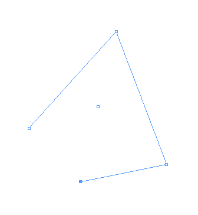
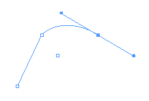
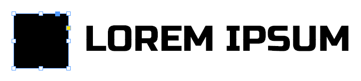
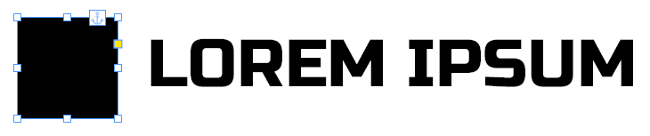
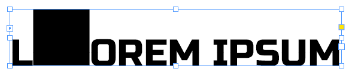

Extrák
A különösen lelkes tördelőknek, olyan funkciók, amiket valószínűleg sosem fogsz használni, de milyen menő már, hogy van ilyen is xd
Előre szólok, hogy ez nem lesz túl koherens, sem részletekbe menő
Zárótördelés
nem feltétlenül csak ez, és nem ebben a sorrendben
- borítót, impresszumot nézd át, hogy a szám specifikus adatok jók-e
- a
_színbekezdés- és objektumstílusokat állítsd be - tartalomjegyzék
- ajánlott generálni, majd kézzel javítani
- főcímekből és kategóriacímekből táplálkozik
- jó kérdés, hogy könyvön belül működik-e xd
- éppen ezért kell minden kategória első kategóriacímét feloldani
- Ctrl+Shift kattintással
Tabulátorok
Type > Tabsvagy Ctrl+Shift+T- a bekezdésstílusok része
Leaderadja meg a köztes karakter(eke)t- a nyíl adja meg, hogy ott épp merre zárt
Tartalomjegyzék
Layout > Table of Contents...- bekezdésstílusok alapján generálja
- tudod utólag módosítani a tartalmát manuálisan
- van neki és érdemes stílust használni hozzá
- kicsit összetett, de nem túl vészes
Layout > Update Table of Contents...ha már változtak az adatok azóta, manuális változtatások elvesznek
Objektumstílusok
- van ilyen is
- extrémen részletes
- ha vágod a karakter- és bekezdésstílusokat, akkor ez pont úgy működik, ahogy gondolnád
Színminták
Ha már Adobe slop, akkor legalább egymással jól működnek. Tudunk Photoshopból és Illustratorból is színmintákat exportálni, és ezeket InDesignba importálni.
Valami olyasmit keress, hogy Export Swatches for Exchange..., InDesignban pedig Load Swatches....
Nyelvi dolgok
- van helyesírás ellenőrzés, Ctrl+I, a durvább hibákat meg tudja fogni, de nem lehet rá teljesen hagyatkozni
- fontos, hogy állítsuk be a helyes nyelvet
- ennek a szótagolásnál is van jelentősége
- és természetessen a helyesírás ellenőrzésnél is
Design libraryk készítése
File > New > Library...- nem kérünk a Creative Cloudból
- kijelöljük az elemetet, majd
+gomb - felmerül a kérdés, hogy mit érdemes libraryvel és mit mester oldalakkal
GREP
- összetett szabályok alapján keresés és csere
- igen, olyan mint linuxon
Edit > Find/Change...- bár nem hiszem, hogy valaha is használnád, de van ilyen
Pen Tool
emlékszünk még grafikából a Catmull-Rom és Bézier görbékre? nagyjából erről van szó
A többi Adobe szoftverhez hasonlóan működik itt is. Görbéket és formákat hozhatunk létre pontok és kontrollpontok segítségével.
- V
Selection Toollal a teljes objektum jelölhető ki - A
Direct Selection Toollal pedig egyesével tudjuk mozgatni az objektum pontjait- vigyázzunk, egyszerre több pont is ki lehet jelölve!
- a teli szín jelzi a kijelölt pontokat, az üres a nem kijelölt pontokat
- P
Pen Toollal tudunk alakzatokat készíteni- ha kattintunk vele tudunk pontokat lerakni, amiket automatikusan összeköt
- 
- kattintsunk az elsőre, hogy körbezárjuk
- nem kötelező körbezárni, néha csak egy vonalra van szükségünk
- Ctrl kattintással tudjuk abbahagyni a kötögetést
- ha ilyet próbálunk meg kitölteni, az InDesign magától köti majd össze az első és utolsó pontokat
- ha kattintás után nyomvatartjuk és húzzuk, akkor görbe vonalakat fog létrehozni
- 
- a szögletes pont az alakzat egy pontja
- a belőle kilógó két egyenes végén található két kerek pont pedig a kontrollpontok
- a kontrolpontok helyzete határozza meg a görbe alakját
- hogy könnyebb legyen elképzelni, tekinthetünk úgy az egyenesekre, mint érintők az adott pontban
- kis játszadozás után szerintem rá lehet érezni, hogy hogyan működnek
- elsőre nem kell tökéletesnek lennije, elég ha nagyjából megvannak a pontok és görbék
- ezután tudjuk igazítani még a A
Direct Selection Toollal- nem csak pontokat, de görbe szakaszokat is tudunk vele mozgatni
- ez a jéghegy csúcsa, a részletekre keress rá a neten
Keep
nekünk kevésbé releváns hosszú, több oldalon átívelő szövegnél jó, hogy megadhatjuk, hogy a cím és a szövegtörzs nagyjából maradjon együtt https://helpx.adobe.com/indesign/using/formatting-paragraphs.html
Paragraphablak hamburgermenüje> Keep Options(vagy Ctrl+Alt+K)- pl. a fejezetcím stílusoknál jól jön, hogy ne szedje szét
- ha manuálisan akarunk babrálni ezen felül:
Type > Insert Break Character(sortörés, oldaltörés stb.)
Horgonyok
anchors
- avagy objektumokat lehorgyonyozhatunk a szöveg egy adott részéhez
- ekkor a szöveggel együtt fog mozogni az objektum is
- 
- a képen a teli kék fogantyúra kattintva és a szövegre húzva tudjuk létrehozni a kapcsolatot
- 
- a horgony ikon jelzi a kapcsolat létét
- Shift-tel szövegbe húzva tudunk inline objektumot, azaz a szöveggel egy sorba fogja tenni, mintha egy karakter lenne
- 
- Alt klikk a horgonyra:
Anchored Object Options- feljebb a lehorgonyzott objektum referenciapontja adható meg (ahonnan viszonyítjuk a pozícióját)
- lejjebb pedig amihez igazítani szeretnénk
- azt is megadhatjuk, hogy ne az alapvonalhoz viszonyítson, hanem pl. a szövegdobozhoz
- alatta pedig ezek alapján megadhatjuk az eltolást
Relative to Spinenal tudunk trükközi, hogy a gerinctől függően hogyan viszonyítson
- text threadinget és horgonyokat nem tudunk egyszerre használni :(
Oldalfüggetlenség
érdemes rá törekedni, ha netán változik az oldal paritása, akkor sok időt és fejfájást tud megspórolni
- szövegek igazításnál egyszerű dolgunk van, van gerinchez és gerinctől el igazítás
- ha teljes szövegdobozt vagy grafikákat szeretnénk oldaltól függően igazítani már kevésbé egyszerű a helyzet
- horgonyokkal tudunk bűvészkedni, éljünk a
Relative to Spineopcióval - a mesteroldalaknál hasonlóan van jobb és bal oldal, bár ez ritkábban jön elő
- horgonyokkal tudunk bűvészkedni, éljünk a